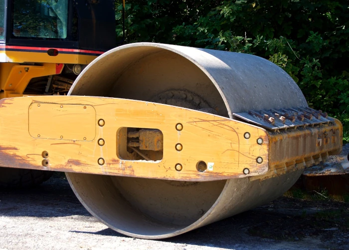

Укладка асфальтовой крошки
Компания ООО "РЕМДОРСТРОЙ" проводит укладку асфальтовой крошки и благоустройство на территории Ивановской, Костромской, Ярославской области.
Изношенное покрытие автодорог после снятия превращается во вторсырье. Измельченный в крошку материал применяется в производстве асфальта, строительстве и ландшафтном дизайне.
Использование вторсырья снижает нагрузку на природные ресурсы и сокращает затраты на материалы. Полученные таким образом ресурсы часто не уступают по прочности и иным качествам дорогостоящим стройматериалам.
Компонентами материала являются гравий, щебень, песок и битум. Соотношение компонентов зависит от марки асфальта, типа и состояния дорожного полотна при снятии.
Главным достоинством асфальтовой крошки, конечно же, является плотность укладки, в результате чего формируется дорожное покрытие способное прослужить дольше, нежели покрытия из щебеня или ПГС. К тому же стоит асфальтовая крошка дешевле. Хорошее решение для проселочных и деревенских дорог, дачных проездов, а так же дворов и парковок
Преимущества асфальтовой крошки
- Низкая стоимость укладки без применения асфальтоукладчика
- Длительный срок службы за счет содержания в смеси битума
- Устойчивость к размытию
- В отличие от щебня асфальтовая крошка не вылетает из — под колес
Наша компания осуществляет отсыпку и строительство дорог с применением асфальтовой крошки. Заказать укладку асфальтовой крошки — Ивановская, Костромская, Ярославская область.